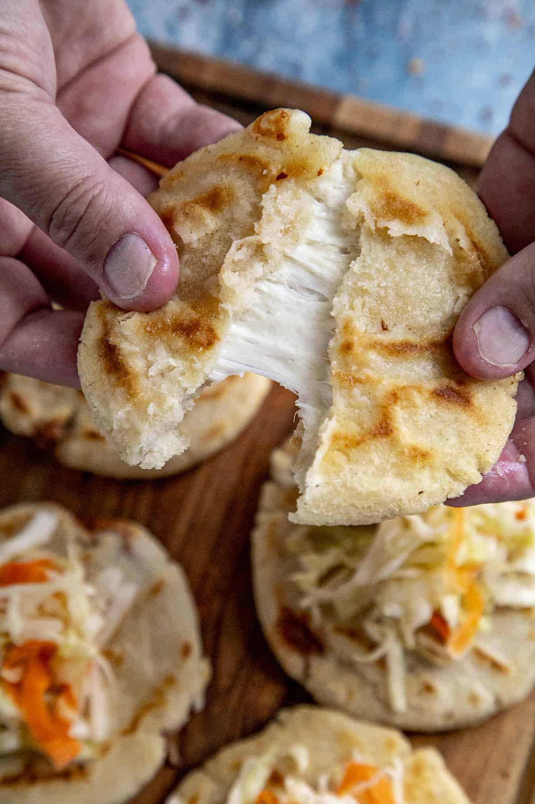

Pupusa's

Simple and fun recipe to make! Stuffed with a lot of yummy and rich flavours! Salvadoran history and background! Make a delicious pupusa anytime with these simple ingredients! Easily made at home! Visit this website to find out about the recipe's history and backgrounds.
History
- The word "pupusa" comes from the Nahuatl language, which means "stuffed".
- They were made with increadients like corn masa and filled with beans, squash, and herbs.
- Pupusas originated approximately 2,000 years ago with the indigenous people from El Salvador, the Pipils.
- The pupusas symbolized the Salvadoran identity, showing the diversity of the nation's culinary heritage.
- Pupusas became more popular over not only El Salvador but also in Salvadoran communities and made its appearance in celebrations, street food markets, and family gatherings.
Description
Pupusas are handmade corn or rice flour tortilla stiffed with fillings like cheese, beans, chicarron, etc.
Ingredients
- 4 cups of flour
- 6 cups of water
- 1 cup of oil
- Chihuahua cheeze
- 1 can of beans